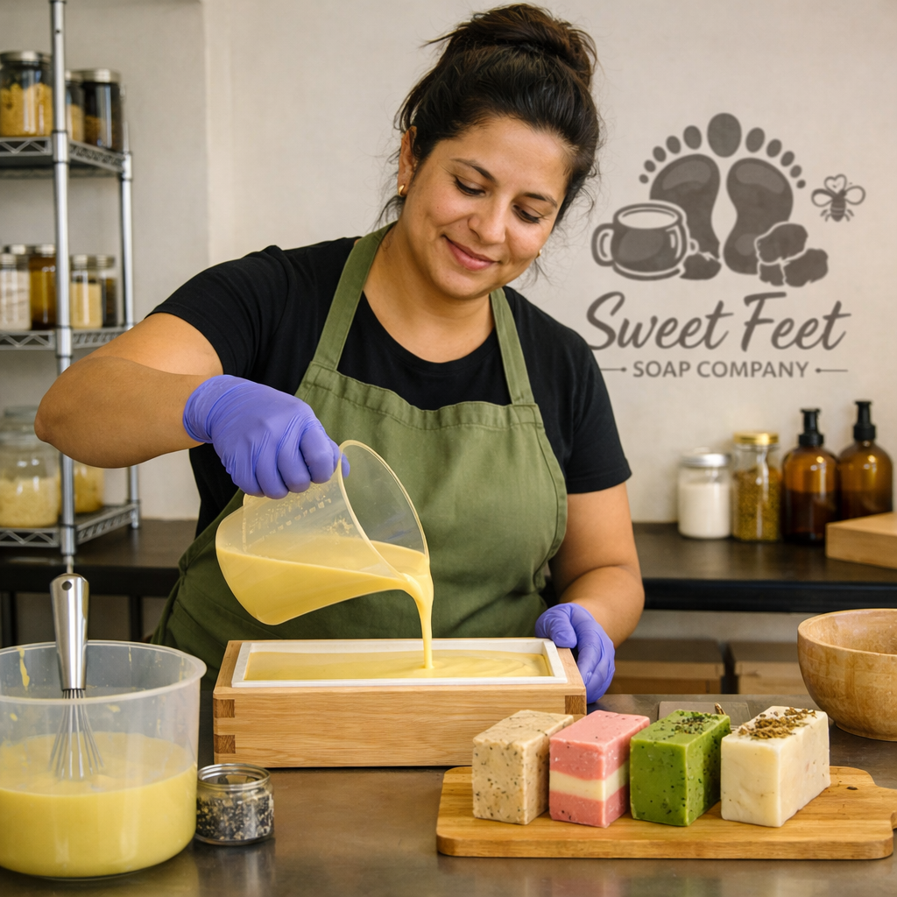
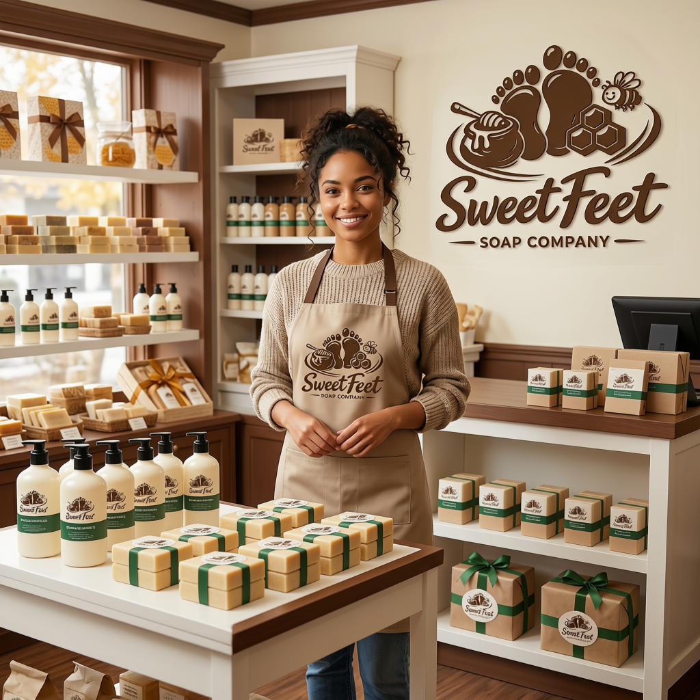
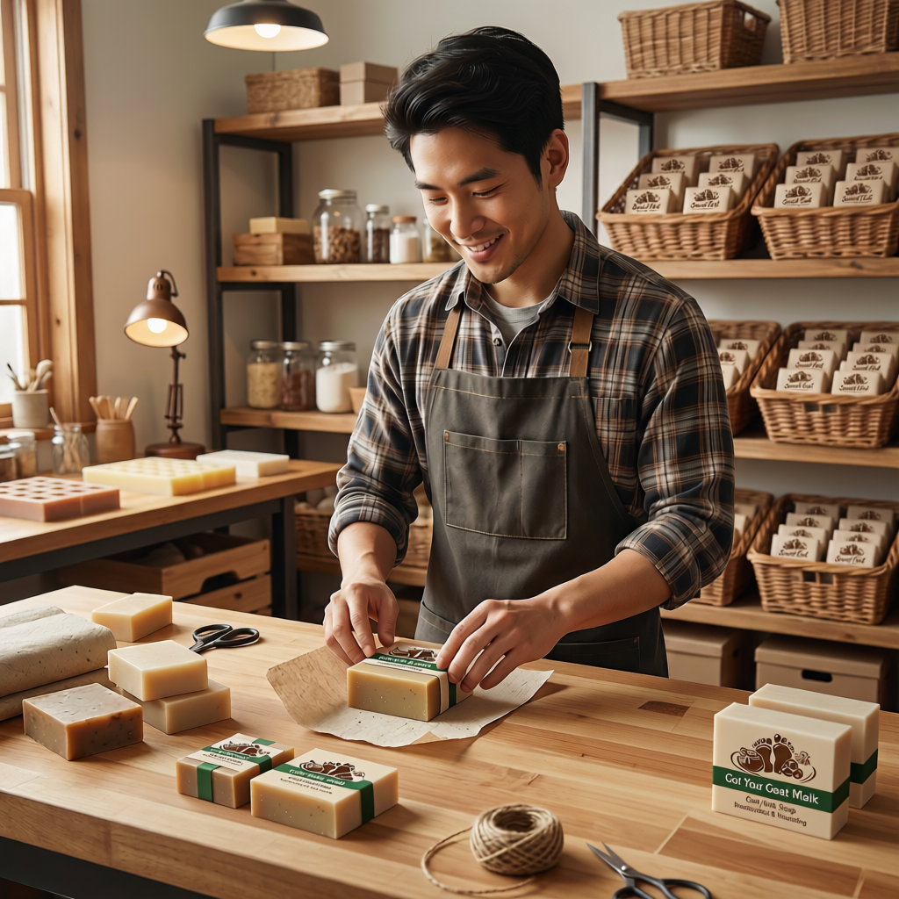

Our Story
Sweet Feet Soap Company has been crafting handmade soaps and lotions for over six years. What started as a hobby and then a cozy brick‑and‑mortar shop has grown into a thriving online store, allowing us to share our creations with customers near and far. We’re proud to combine humor, creativity, and natural ingredients to make self‑care fun and effective. From our popular deodorant bar Smell You Later to nourishing body washes, each product is designed to pamper your skin and bring a smile to your day.
Our Team
Behind every bar of soap and bottle of lotion is a dedicated team of 26 employees. Together, we manage retail, production, packaging, and fulfillment to ensure every order is handled with care.
- Retail & Online Fulfillment: Our storefront staff keep the shop lively and also rotate to fulfill online orders.
- Production & R&D: Skilled soap‑makers and researchers develop new formulas and ensure quality in every batch.
- Packaging & Gift Baskets: Our packaging team assembles products and creates gift baskets that make perfect presents.
- Warehouse & Procurement: Warehouse staff manage inventory and shipments, while our purchasing officer secures the finest raw materials and supplies.
- Management: A manager, assistant manager, finance officer, and website administrator keep operations running smoothly.
Our Promise
We believe in transparency and quality. That’s why our raw materials are carefully sourced, and our goat milk comes from reputable suppliers — so you can feel confident about what you’re putting on your skin. Every product is handcrafted with care, balancing tradition with innovation to support healthier, happier skin.
Employee Spotlight
Each quarter, we highlight one of our amazing team members (or a small team) to celebrate their contributions. From the soap‑makers who perfect each recipe to the warehouse staff who ensure your order arrives on time, these spotlights share what their job entails and why they’re awesome. It’s our way of showing appreciation and letting you meet the people behind Sweet Feet.

Featured Employee: Sophia Martinez
Role: Soap Artisan
What They Do: Sophia Martinez is a Soap‑Maker at Sweet Feet Soap Co., where she brings artistry and precision to every batch. Her role centers on: Crafting Soaps → Measuring, mixing, and pouring natural ingredients with consistency and care. Maintaining Quality → Ensuring each bar meets Sweet Feet’s standards for lather, texture, and skin benefits. Production Leadership → Setting the pace for the soap‑making team and guiding newer artisans in best practices. Commitment to Tradition → Upholding the values of craftsmanship and dedication that have defined Sweet Feet since its founding. Sophia’s steady hands and deep knowledge of the soap‑making process make her a cornerstone of the production team. Her work ensures that every bar carries the same care and quality that customers have come to love.
Why They're Awesome: Sophia Martinez has been with Sweet Feet Soap Co. since the very beginning, bringing her deep knowledge of ingredients and unwavering dedication to the company’s mission. She is the original formulator behind three of our most beloved products:
- Smell You Later
- Got Your Goat Milk
- Lemon Be Honest
Featured Employee: David Brown
Role: Warehouse Logistic Specialist
What They Do: David’s role focuses on the behind‑the‑scenes logistics that keep Sweet Feet running: Ingredient Handling → Organizes incoming materials so they’re easy to store, access, and move into production. Product Organization → Ensures finished soaps and spa products are arranged logically for packaging and shipping. Inventory Management → Tracks supplies and stock levels to prevent shortages and keep production on schedule. Team Collaboration → Works closely with packaging and retail staff to streamline the flow of goods. David’s steady work ethic and dedication make him an unsung hero of the company. While customers see the beautiful soaps and packaging, it’s David’s behind‑the‑scenes efforts that ensure everything arrives safely and on schedule.
Why They're Awesome: David’s impact goes beyond daily warehouse duties. He created the method for inventorying and cataloging that Sweet Feet still uses today, bringing order and efficiency to the system. He also organized the shelves in a logical manner, making it easy for anyone to find ingredients, finished products, or office supplies quickly. His thoughtful approach ensures smooth operations and reflects his dedication to Sweet Feet’s long‑term success.

Featured Employee: Emily Carter
Role: Retail Associate
What They Do: Emily Carter is a valued member of the Retail Team at Sweet Feet Soap Co. Her warm personality and dedication to customer service make her an essential part of the company, especially during the busy holiday season. Emily’s role centers on connecting Sweet Feet products with customers: Customer Service → Provides friendly, knowledgeable assistance to shoppers, ensuring they find the perfect soaps and spa products. Sales Support → Helps manage retail displays and keeps shelves stocked and inviting. Product Knowledge → Shares insights about Sweet Feet’s unique formulations, guiding customers to the right choices. Team Collaboration → Works closely with warehouse and packaging staff to keep the retail side running smoothly.
Why They're Awesome: Emily’s impact was especially felt during the holiday rush of Q4 2025. With crowds pouring in and demand at its peak, she kept the retail floor organized, welcoming, and cheerful. Her ability to balance high‑volume sales with personalized service ensured that every customer felt valued, even in the busiest moments. Many customers raved about her helpfulness and kindness, praising the way she made their shopping experience enjoyable. Thanks to Emily’s dedication, Sweet Feet Soap Co. not only met the holiday demand but also left customers with lasting positive experiences.

Featured Employee: Jacob Lee
Role: Packaging Associate
What They Do: Jacob Lee is a dedicated member of the Packaging Team at Sweet Feet Soap Co. His precision and consistency ensure that every product leaves the warehouse looking professional and brand‑ready. Jacob’s role focuses on the final stage of production — packaging: Product Wrapping → Carefully packages soaps and spa products to maintain quality and presentation. Label Application → Ensures labels are applied neatly and consistently, reinforcing Sweet Feet’s brand identity. Quality Checks → Reviews finished goods before they move to retail or shipping, catching issues before they reach customers. Workflow Support → Keeps the packaging line organized and efficient, supporting smooth operations across the team.
Why They're Awesome: Jacob has an eye for detail that makes him stand out. From perfectly aligned labels to neatly wrapped bars, he ensures every product looks its best. Beyond presentation, Jacob also plays a critical role in making sure products are always available when needed — even during the busiest times. His consistency and reliability help Sweet Feet maintain a polished, professional image while meeting customer demand without interruption. Thanks to Jacob’s dedication, the packaging team delivers excellence day after day.
Featured Employee: Caroline Foster
Role: Purchasing Officer
What They Do: Caroline Foster is the Purchasing Officer at Sweet Feet Soap Co. Her sharp organizational skills and strategic approach to sourcing make her an indispensable part of the team. Caroline’s role ensures Sweet Feet always has the right materials at the right time: Vendor Coordination → Works with suppliers to secure high‑quality ingredients and packaging materials. Supply Management → Tracks incoming orders to align with production schedules and prevent shortages. Cost Efficiency → Balances quality with budget, ensuring Sweet Feet gets the best value. Team Support → Collaborates with production and warehouse teams to keep workflows smooth.
Why They're Awesome: Caroline’s dedication during Q2 2026 stood out. She kept the supply chain running seamlessly, even when demand was high. Her ability to anticipate needs and coordinate with vendors meant that production never slowed down. Thanks to her foresight, Sweet Feet always had the ingredients and materials required to meet customer demand. Caroline’s reliability and strategic thinking make her a vital force behind the brand’s success.